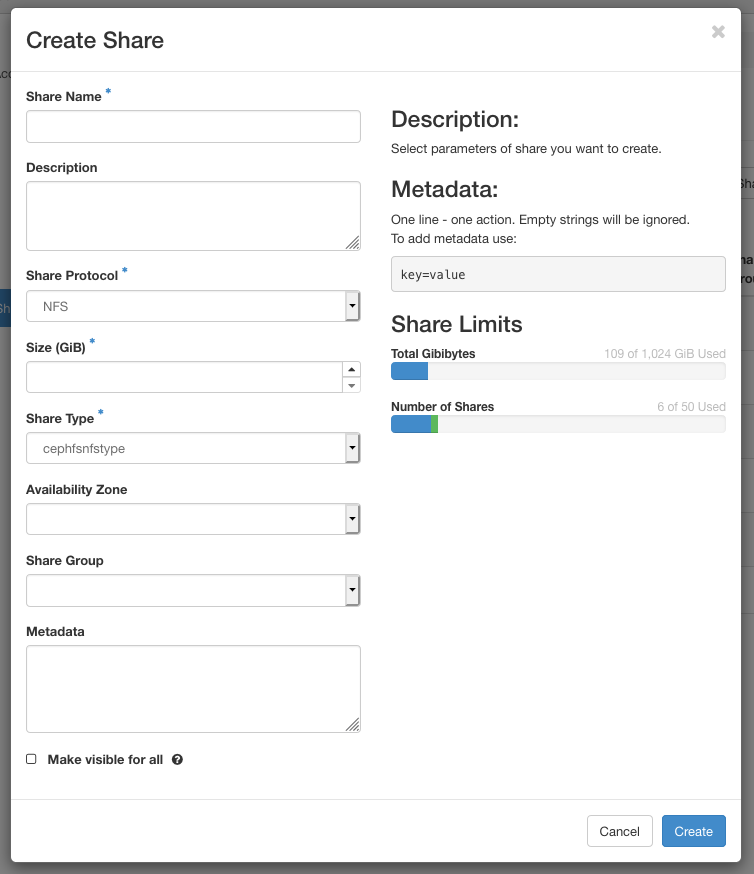

Shared file systems using Manila#
OpenStack's Manila service makes it possible to create and manage shared nfs file systems for virtual machines. This service is not automatically enabled for every VSC cloud project, so you should contact cloud@vscentrum.be if you want to use shared file systems in your project.
Creating a Shared File System#
Creating a shared file system using the Horizon interface is quite straightforward:
-
Open the Share tab, and click Shares. A list of existing shares (if any) is shown.
-
Click the Create Share button to open the following dialog:

Fill out the following fields:
-
Share Name
Choose a name.
-
Description
Optionally, add a description.
-
Share Protocol
Use the default nfs protocol.
-
Size (GiB)
Set the size of the shared file system to be created. The total available storage and the amount currently used are shown on the right.
-
Share Type
Here, you must select "cephfsnfstype" (the only choice).
-
Metadata
You can attach additional metadata to your shared file system, which can be queried later on.
Other fields are not mandatory. By default, the shared file system will only be visible within the current project (Visibility: "private"). Be careful with the option "Make visible for all': enabling it will set the visibility of your shared file system to "public", making it visible for any other project in the VSC cloud as well.
-
Click Create to complete this step.
At this point, the shared file system exists within OpenStack, but it cannot be used until we define access rules for it.
Defining nfs access rules#
You must define rules that define which machines on the network may obtain read or write access to your shared file system. By default, in absence of any rules, a shared file system cannot be accessed by anyone.
-
Open the drop-down menu in the Actions column for your share, and click Manage Rules.
-
You can now see all Share Rules for this shared file system. For a newly created file system, the list will be empty. Click Add rule.
-
Fill out the Add Rule dialog:
Access Type
Only "ip" is supported.
Access Level
Choose if you want to give read and write ("rw") or read-only ("ro") permission with this rule.
Access To
Here, you can specify an ip address, or an address range, to which the rule applies. The addresses should be specified according to the format of an NFS exports configuration file. The following table contains a few examples, assuming the project's _nfs network has the subnet 10.10.x.0/24, for some value of x (see section _nfs networks):
:::
-
10.10.x.13
- Allow this single ip address.
-
0.0.0.0/0
- Allow any ip address.
- 10.10.x.0/24
- Allow any ip address from the project's _nfs network. For a non-public shared file system this has the same effect as the previous rule, because such a shared file system can only be accessed from within our project's _nfs network anyway.
-
10.10.x.0/28
- Allow addresses 10.10.x.0 until 10.10.x.15.
Click Add to add the rule.
Your rule now appears in the list. You can add as many rules as you wish, to set the access level for different addresses or address ranges.
Accessing a shared file system#
When the proper access rules for the shared file system are in place, you can access it from an instance with a matching ip. In order to be able to mount the shared file system, your instance needs
-
a nfs client, installed by default on images provided by the VSC cloud, and
-
access to the _nfs network. Because your instance likely has to connect to the _vm network as well, your VM should have two nic's. Again, this is taken care of in the default images.
When you are ready to mount the network file system on an instance, look up the network location of your file system using the Dashboard:
-
Open the Share tab and click Shares. The list of all shared file systems in your project is shown.
-
Click the name of the shared file system you wish to access.
-
In the section "Share Overview", look for the item Export locations.
-
Copy the content of the Path: field.
Once you know the location of your shared file system, you can mount it on any VM with the appropriate access rights, e.g. to mount a shared file system with location 10.2.0.2:/volumes/_nogroup/918...a78 at mount point \mnt:
sudo mount 10.2.0.2:/volumes/_nogroup/918...a78 /mnt